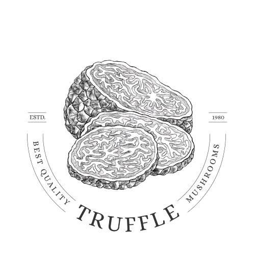

OQUE SÃO TRUFAS NEGRAS?
As trufas negras são fungos subterrâneos raros e altamente valorizados na gastronomia. Elas crescem em simbiose com raízes de árvores, como carvalhos e aveleiras, e possuem um aroma e sabor intensos. Seu cultivo exige condições específicas de solo, clima e um monitoramento preciso para garantir o melhor desenvolvimento. Com nossa tecnologia de monitoramento, produtores podem otimizar o cultivo e aumentar a produtividade com dados em tempo real.
Qual a Finalidade desta iguaria?

Trufas Negras In Natura
As trufas negras são fungos raros e altamente valorizados na gastronomia. Encontradas no subsolo próximo às raízes de árvores como carvalhos e avelãs, possuem um aroma intenso e sofisticado.

Trufas na Gastronomia
Muito usadas na alta gastronomia, as trufas negras são raladas ou fatiadas sobre pratos como massas, risotos e carnes. Seu sabor único transforma a refeição em uma experiência refinada.

Azeite Trufado
O azeite trufado é uma alternativa para levar o sabor das trufas negras a diversos pratos. Usado para finalizar receitas, realça o sabor de saladas, massas e risotos com um toque sofisticado.
Sobre a Truficultura
O Cultivo

Nossa Solução

Medição precisa
A medição precisa da umidade do solo garante um controle eficiente da irrigação, evitando desperdícios e otimizando o crescimento das plantas. No cultivo de trufas negras, essa precisão é essencial para criar as condições ideais de desenvolvimento.

Monitoramente em tempo real
O monitoramento da umidade do solo é essencial para otimizar o crescimento das plantas e garantir a eficiência da irrigação. Com sensores de umidade, é possível medir em tempo real a quantidade de água disponível no solo, evitando tanto o excesso quanto a falta de irrigação
E consequentemente ...
Um aumento de até 100% em sua truficultura
* Segundo um estudo realizado pela IPB University.